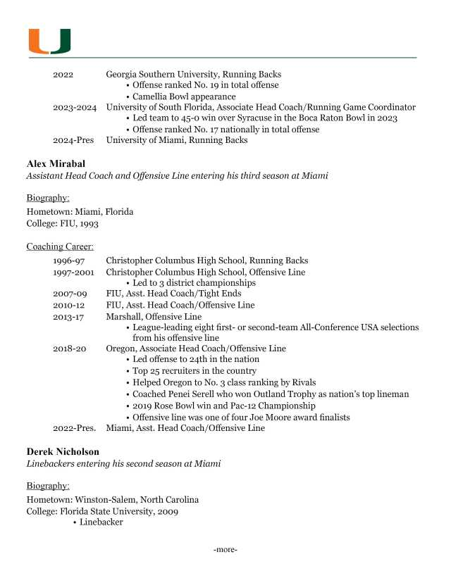

Ashley Sewall
In one of my PR writing classes, we spent the semester working with a client of our choosing and developing a media kit for them. I decided to work with the University of Miami football team, crafting a backgrounder, fact sheet, news release and more seen below. This experience gave me a look into the fast-paced environment of PR, especially sports PR, and taught me how to build documents necessary for a media kit.